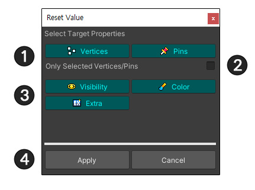
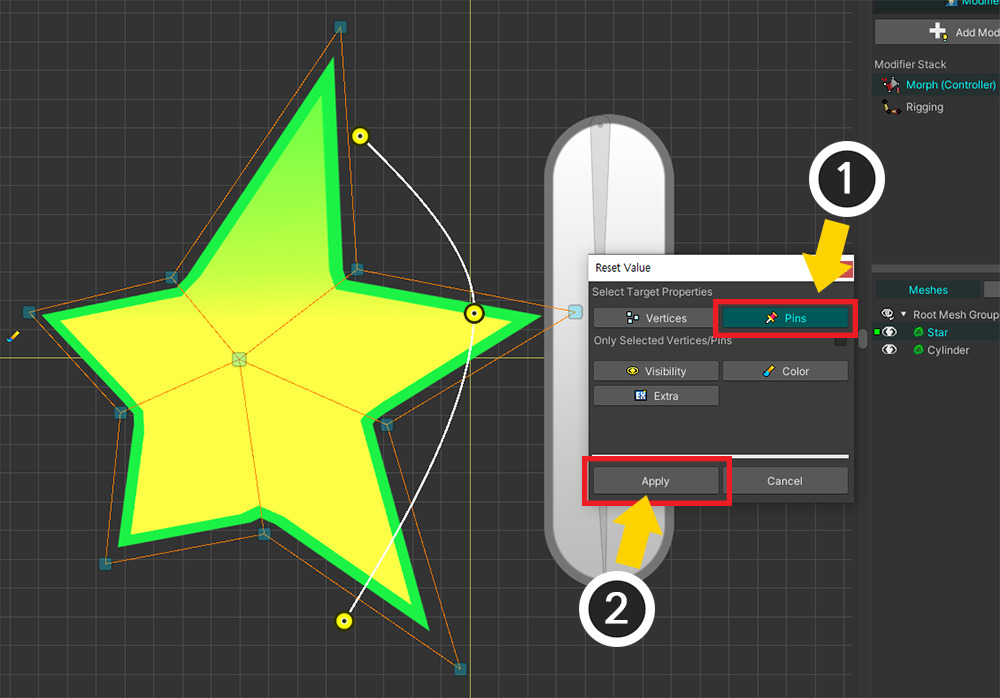
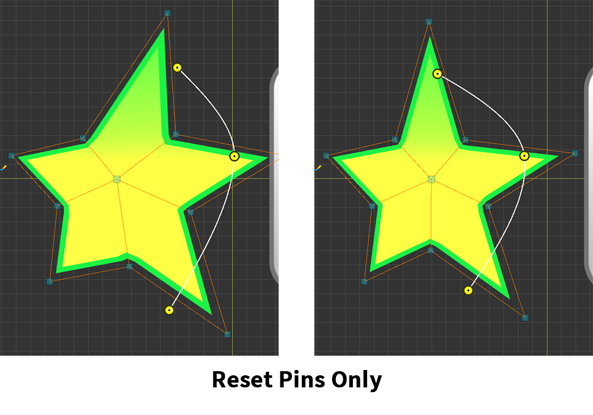
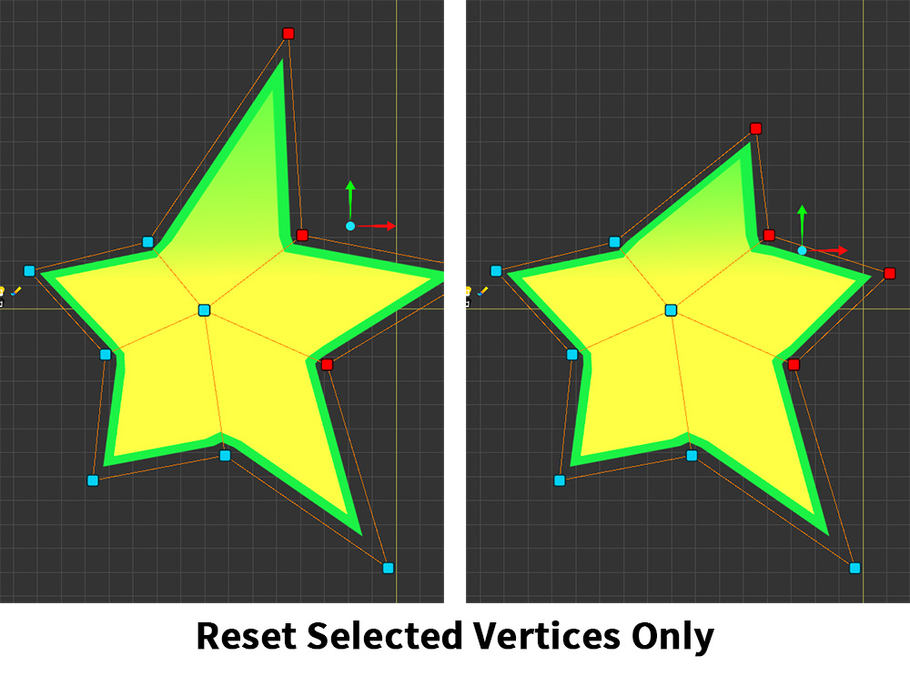
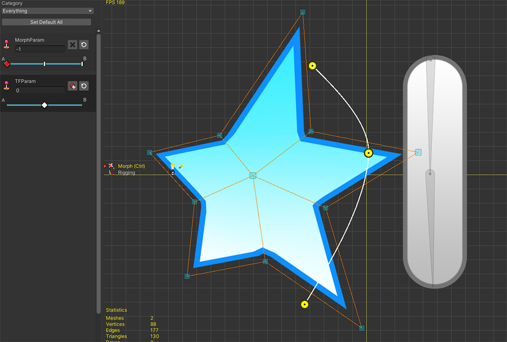
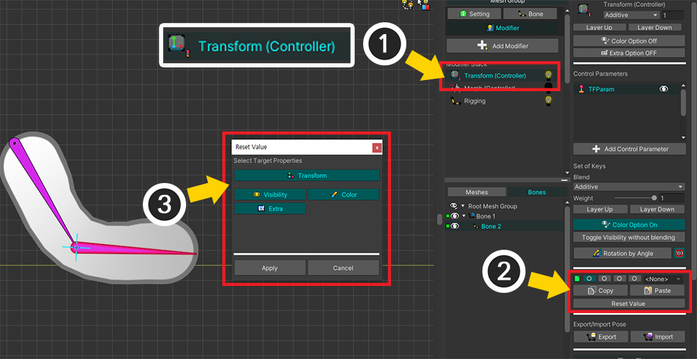

AnyPortrait > マニュアル > プロパティを指定して貼り付け/リセット
プロパティを指定して貼り付け/リセット
1.4.5
制御パラメータに関連付けられているモディファイアを編集するとき、値のコピーまたはリセット中に常にすべてのデータがターゲットになりました。
AnyPortrait v1.4.0に追加された機能により、コピーやリセットの対象となる属性をユーザーが選択できます。

説明のために準備した例です。
コントロールパラメータに関連付けられている「Morphモディファイア」と「Transformモディファイア」に移動するオブジェクト。
この例では、頂点とピンに「Morph」を適用するか、ボーンに「Transform」を適用して、値をコピーまたはリセットしてみるプロセスを説明します。

(1) 「Morph (Controller)」モディファイアを追加しました。

Morphモディファイアで頂点はもちろん、ピンを一緒に編集してみましょう。

(1) 制御パラメータをモディファイアに登録し、キーを追加します。
(2) 頂点とピンの位置を変形し、色を黄色に変更しました。
それでは、この状態で変形された形や色の値をリセットするか、別のキーにコピーしてみましょう。

(1) 「Reset Value」ボタンを押します。
(2) リセットする値の種類を選択するダイアログが表示されます。

これはダイアログの構成です。
1. 頂点またはピンの位置
2. 選択した頂点またはピンのみをターゲットにするかどうか
3. メッシュの可視性、色、Extraオプション
4. 選択完了時にリセットまたは貼り付けを実行

すべて選択して「Apply」ボタンを押すと、上記のようにすべての変形値がリセットされます。

(1) 今回は「Pins」のみを選択し、 (2) 「Apply」ボタンを押してみましょう。

他のプロパティは、そのままの状態でピンの位置だけがリセットされていることがわかります。

「Color」のみを選択した場合は、色だけが元の値に戻ります。

いくつかの頂点だけをリセットしましょう。
(1) リセットしたい頂点を選択します。
(2) 「Reset Value」ボタンを押した後、「Vertices」のみをオンにします。
(3) 「Only Selected Vertices/Pins 」オプションをオンにして「Apply」を押します。

選択した頂点の位置のみがリセットされていることがわかります。

この機能は、値を別のキーにコピーするときにも使用できます。
(1) 値をコピーしたいキーに制御パラメータを移動します。
(2) 「Copy」ボタンを押して値をスロットに保存します。

(1) 値を貼り付けるキーに制御パラメータを移動します。
(2) スロットを選択します。
(3) 「Paste」ボタンを押します。
(4) どの値を貼り付けるかを選択するダイアログが表示されます。 「Vertices」と「Pins」のみを選択した状態で「Apply」ボタンを押してみましょう。

頂点とピンの位置が同じにコピーされていることがわかります。

また、この機能はTransformモディファイアにも同様に適用されます。
(1) 「Transform (Controller)」モディファイアを追加しました。
(2) 「Reset Value」ボタンを押して値を初期化するか、「Paste」ボタンを押します。
(3) 「Vertices、Pins」の代わりに「Transform」オプションのあるダイアログを使用して値を設定できます。
アニメーションの場合は、「メッシュ」を対象とする場合にのみプロパティを指定してキーフレームの値を貼り付けたり、初期化を行うことができます。
その他のターゲットは属性を区別せずに値がコピーまたは初期化されます。